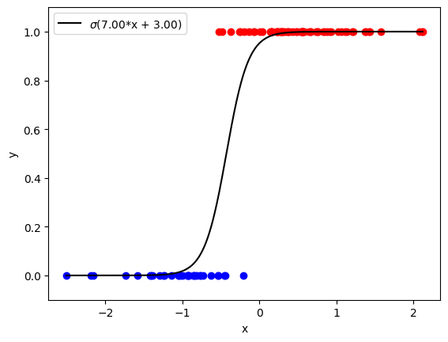
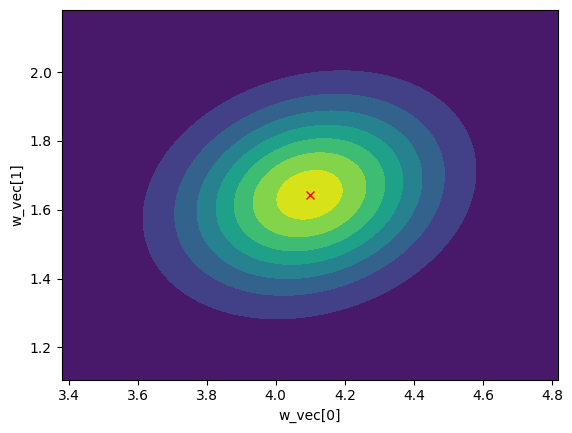

bayesml.logisticregression package#

Module contents#
The logistic regression model with the Gaussian prior distribution.
The stochastic data generative model is as follows:
\(d \in \mathbb N\): a dimension
\(\boldsymbol{x} \in \mathbb{R}^d\): an explanatory variable. If you consider an intercept term, it should be included as one of the elements of \(\boldsymbol{x}\).
\(y\in\{ 0, 1\}\): an objective variable
\(\boldsymbol{w}\in\mathbb{R}^{d}\): a parameter
where \(\sigma(\cdot)\) is defined as follows (called a sigmoid function):
The prior distribution is as follows:
\(\boldsymbol{\mu}_0 \in \mathbb{R}^d\): a hyperparameter
\(\boldsymbol{\Lambda}_0 \in \mathbb{R}^{d\times d}\): a hyperparameter (a positive definite matrix)
The apporoximate posterior distribution in the \(t\)-th iteration of a variational Bayesian method is as follows:
\(n \in \mathbb N\): a sample size
\(\boldsymbol{x}^n = (\boldsymbol{x}_1, \boldsymbol{x}_2, \dots , \boldsymbol{x}_n) \in \mathbb{R}^{n \times d}\)
\(\boldsymbol{y}^n = (y_1, y_2, \dots , y_n) \in \{0,1\}^n\)
\(\boldsymbol{\mu}_n^{(t)}\in \mathbb{R}^d\): a hyperparameter
\(\boldsymbol{\Lambda}_n^{(t)} \in \mathbb{R}^{d\times d}\): a hyperparameter (a positive definite matrix)
where the updating rules of the hyperparameters are as follows:
\(\boldsymbol{\xi}^{(t)} = (\xi_{1}^{(t)}, \xi_{2}^{(t)}, \dots, \xi_{n}^{(t)}) \in \mathbb{R}_{\geq 0}^n\): a variational parameter
where \(\lambda(\cdot)\) is defined as follows:
The approximate predictive distribution is as follows:
\(\boldsymbol{x}_{n+1}\in \mathbb{R}^d\): a new data point
\(y_{n+1}\in \{ 0, 1\}\): a new objective variable
where \(\sigma_\mathrm{p}^2\), \(\mu_\mathrm{p}\) are obtained from the hyperparameters of the approximate posterior distribution as follows:
and \(\kappa(\cdot)\) is defined as
- class bayesml.logisticregression.GenModel(c_degree, *, w_vec=None, h_mu_vec=None, h_lambda_mat=None, seed=None)#
ベースクラス:
GenerativeThe stochastic data generative model and the prior distribution.
- Parameters:
- c_degreeint
a positive integer.
- w_vecnumpy ndarray, optional
a vector of real numbers, by default [0.0, 0.0, ... , 0.0]
- h_mu_vecnumpy ndarray, optional
a vector of real numbers, by default [0.0, 0.0, ... , 0.0]
- h_lambda_matnumpy ndarray, optional
a positive definate matrix, by default the identity matrix
- seed{None, int}, optional
A seed to initialize numpy.random.default_rng(), by default None
Methods
Generate the parameter from the prior distribution.
gen_sample([sample_size, x, constant])Generate a sample from the stochastic data generative model.
Get constants of GenModel.
Get the hyperparameters of the prior distribution.
Get the parameter of the sthocastic data generative model.
load_h_params(filename)Load the hyperparameters to h_params.
load_params(filename)Load the parameters saved by
save_params.save_h_params(filename)Save the hyperparameters using python
picklemodule.save_params(filename)Save the parameters using python
picklemodule.save_sample(filename[, sample_size, x, constant])Save the generated sample as NumPy
.npzformat.set_h_params([h_mu_vec, h_lambda_mat])Set the hyperparameters of the prior distribution.
set_params([w_vec])Set the parameter of the sthocastic data generative model.
visualize_model([sample_size, constant])Visualize the stochastic data generative model and generated samples.
- get_constants()#
Get constants of GenModel.
- Returns:
- constantsdict of {str: int}
"c_degree": the value ofself.c_degree
- set_params(w_vec=None)#
Set the parameter of the sthocastic data generative model.
- Parameters:
- w_vecnumpy ndarray, optional
a vector of real numbers, by default None
- set_h_params(h_mu_vec=None, h_lambda_mat=None)#
Set the hyperparameters of the prior distribution.
- Parameters:
- h_mu_vecnumpy ndarray, optional
a vector of real numbers, by default None.
- h_lambda_matnumpy ndarray, optional
a positive definate matrix, by default None.
- get_params()#
Get the parameter of the sthocastic data generative model.
- Returns:
- paramsdict of {str: float or numpy ndarray}
"w_vec": The value ofself.w_vec.
- get_h_params()#
Get the hyperparameters of the prior distribution.
- Returns:
- h_paramsdict of {str: float or numpy ndarray}
"h_mu_vec": The value ofself.h_mu_vec"h_lambda_mat": The value ofself.h_lambda_mat
- gen_params()#
Generate the parameter from the prior distribution.
The generated vaule is set at
self.w_vec.
- gen_sample(sample_size=None, x=None, constant=True)#
Generate a sample from the stochastic data generative model.
If x is given, it will be used for explanatory variables as it is (independent of the other options: sample_size and constant).
If x is not given, it will be generated from i.i.d. standard normal distribution. The size of the generated sample is defined by sample_size. If constant is True, the last element of the generated explanatory variables will be overwritten by 1.0.
- Parameters:
- sample_sizeint, optional
A positive integer, by default
None.- xnumpy ndarray, optional
float array whose shape is
(sample_size,c_degree), by defaultNone.- constantbool, optional
A boolean value, by default
True.
- Returns:
- xnumpy ndarray
float array whose shape is
(sample_size,c_degree).- ynumpy ndarray
1 dimensional int array whose size is
sample_size.
- save_sample(filename, sample_size=None, x=None, constant=True)#
Save the generated sample as NumPy
.npzformat.If x is given, it will be used for explanatory variables as it is (independent of the other options: sample_size and constant).
If x is not given, it will be generated from i.i.d. standard normal distribution. The size of the generated sample is defined by sample_size. If constant is True, the last element of the generated explanatory variables will be overwritten by 1.0.
The generated sample is saved as a NpzFile with keyword: "x", "y".
- Parameters:
- filenamestr
The filename to which the sample is saved.
.npzwill be appended if it isn't there.- sample_sizeint, optional
A positive integer, by default
None.- xnumpy ndarray, optional
float array whose shape is
(sample_size,c_degree), by defaultNone.- constantbool, optional
A boolean value, by default
True.
- visualize_model(sample_size=100, constant=True)#
Visualize the stochastic data generative model and generated samples.
- Parameters:
- sample_sizeint, optional
A positive integer, by default 100
- constantbool, optional
A boolean value, by default
True.
Examples
>>> import numpy as np >>> from bayesml import logisticregression >>> model = logisticregression.GenModel(c_degree=2,w_vec=np.array([7,3])) >>> model.visualize_model() w_vec: [7. 3.]
- class bayesml.logisticregression.LearnModel(c_degree, *, h0_mu_vec=None, h0_lambda_mat=None, seed=None)#
ベースクラス:
Posterior,PredictiveMixinThe posterior distribution and the predictive distribution.
- Parameters:
- c_degreeint
a positive integer.
- h0_mu_vecnumpy ndarray, optional
a vector of real numbers, by default [0.0, 0.0, ... , 0.0]
- h0_lambda_matnumpy ndarray, optional
a positive definate matrix, by default the identity matrix
- Attributes:
- hn_mu_vecnumpy ndarray
a vector of real numbers
- hn_lambda_matnumpy ndarray
a positive definate matrix
- hn_lambda_mat_invnumpy ndarray
a positive definate matrix
- xisnumpy ndarray
real numbers
- vlfloat
real number
- p_sigmas_sqnumpy ndarray
positive real numbers
- p_musnumpy ndarray
real numbers
Methods
Calculate the parameters of the predictive distribution.
estimate_params([loss])Estimate the parameter of the stochastic data generative model under the given criterion.
fit(x, y[, max_itr, tolerance])Fit the model to the data.
Get constants of LearnModel.
Get the initial values of the hyperparameters of the posterior distribution.
Get the hyperparameters of the posterior distribution.
Get the parameters of the predictive distribution.
load_h0_params(filename)Load the hyperparameters to h0_params.
load_hn_params(filename)Load the hyperparameters to hn_params.
make_prediction([loss])Predict a new data point under the given criterion.
overwrite_h0_params()Overwrite the initial values of the hyperparameters of the posterior distribution by the learned values.
pred_and_update(x, y[, loss, max_itr, tolerance])Update the hyperparameters of the posterior distribution using traning data.
predict(x)Predict the data.
Predict the data.
reset_hn_params()Reset the hyperparameters of the posterior distribution to their initial values.
save_h0_params(filename)Save the hyperparameters using python
picklemodule.save_hn_params(filename)Save the hyperparameters using python
picklemodule.set_h0_params([h0_mu_vec, h0_lambda_mat])Set initial values of the hyperparameter of the posterior distribution.
set_hn_params([hn_mu_vec, hn_lambda_mat])Set updated values of the hyperparameter of the posterior distribution.
update_posterior(x, y[, max_itr, tolerance])Update the hyperparameters of the posterior distribution using traning data.
Visualize the posterior distribution for the parameter.
- get_constants()#
Get constants of LearnModel.
- Returns:
- constantsdict of {str: int}
"c_degree": the value ofself.c_degree
- set_h0_params(h0_mu_vec=None, h0_lambda_mat=None)#
Set initial values of the hyperparameter of the posterior distribution.
Note that the parameters of the predictive distribution are also calculated from
self.h0_mu_vecandself.h0_lambda_mat.- Parameters:
- h0_mu_vecnumpy ndarray, optional
a vector of real numbers, by default None.
- h0_lambda_matnumpy ndarray, optional
a positive definate matrix, by default None.
- get_h0_params()#
Get the initial values of the hyperparameters of the posterior distribution.
- Returns:
- h0_paramsdict of {str: float or numpy ndarray}
"h0_mu_vec": The value ofself.h0_mu_vec"h0_lambda_mat": The value ofself.h0_lambda_mat
- set_hn_params(hn_mu_vec=None, hn_lambda_mat=None)#
Set updated values of the hyperparameter of the posterior distribution.
Note that the parameters of the predictive distribution are also calculated from
self.hn_mu_vecandself.hn_lambda_mat.- Parameters:
- hn_mu_vecnumpy ndarray, optional
a vector of real numbers, by default None.
- hn_lambda_matnumpy ndarray, optional
a positive definate matrix, by default None.
- get_hn_params()#
Get the hyperparameters of the posterior distribution.
- Returns:
- hn_paramsdict of {str: float or numpy ndarray}
"hn_mu_vec": The value ofself.hn_mu_vec"hn_lambda_mat": The value ofself.hn_lambda_mat
- update_posterior(x, y, max_itr=1000, tolerance=1e-08)#
Update the hyperparameters of the posterior distribution using traning data.
- Parameters:
- xnumpy ndarray
float array. The size along the last dimension must conincides with the c_degree. If you want to use a constant term, it should be included in x.
- ynumpy ndarray
float array.
- max_itrint, optional
maximum number of iterations, by default 1000
- tolerancefloat, optional
convergence criterion of variational lower bound, by default 1.0E-8
- estimate_params(loss='squared')#
Estimate the parameter of the stochastic data generative model under the given criterion.
- Parameters:
- lossstr, optional
Loss function underlying the Bayes risk function, by default "squared". This function supports "squared", "0-1", "abs", and "KL".
- Returns:
- w_vec_hatnumpy ndarray or rv_frozen
The estimated value under the given loss function. If it is not exist, None will be returned. If the loss function is "KL", the posterior distribution itself will be returned as rv_frozen object of scipy.stats.
- visualize_posterior()#
Visualize the posterior distribution for the parameter.
Examples
>>> from bayesml import logisticregression >>> gen_model = logisticregression.GenModel(c_degree=2,w_vec=np.array([7,3])) >>> x,y = gen_model.gen_sample(sample_size=200) >>> learn_model = logisticregression.LearnModel(c_degree=2) >>> learn_model.update_posterior(x,y) >>> learn_model.visualize_posterior() hn_mu_vec: [4.0979368 1.64361963] hn_lambda_mat: [[18.12098962 -4.70969658] [-4.70969658 32.42845112]]

- get_p_params()#
Get the parameters of the predictive distribution.
- Returns:
- p_paramsdict of {str: numpy ndarray}
"p_sigmas_sq": The value ofself.p_sigmas_sq"p_mus": The value ofself.p_mus
- calc_pred_dist(x)#
Calculate the parameters of the predictive distribution.
- Parameters:
- xnumpy ndarray
float array. The size along the last dimension must conincides with the c_degree. If you want to use a constant term, it should be included in x.
- make_prediction(loss='0-1')#
Predict a new data point under the given criterion.
- Parameters:
- lossstr, optional
Loss function underlying the Bayes risk function, by default "0-1". This function supports "squared", "0-1", "abs", and "KL".
- Returns:
- Predicted_valuesnumpy ndarray
The predicted values under the given loss function. If the loss function is "KL", the predictive distribution itself will be returned as numpy.ndarray.
- pred_and_update(x, y, loss='0-1', max_itr=1000, tolerance=1e-08)#
Update the hyperparameters of the posterior distribution using traning data.
- Parameters:
- xnumpy ndarray
float array. The size along the last dimension must conincides with the c_degree. If you want to use a constant term, it should be included in x.
- ynumpy ndarray
float array.
- lossstr, optional
Loss function underlying the Bayes risk function, by default "0-1". This function supports "squared", "0-1", "abs", and "KL".
- max_itrint, optional
maximum number of iterations, by default 1000
- tolerancefloat, optional
convergence criterion of variational lower bound, by default 1.0E-8
- Returns:
- Predicted_valuesnumpy ndarray
The predicted values under the given loss function. If the loss function is "KL", the predictive distribution itself will be returned as numpy.ndarray.
- fit(x, y, max_itr=1000, tolerance=1e-08)#
Fit the model to the data.
This function is a wrapper of the following functions:
>>> self.reset_hn_params() >>> self.update_posterior(x,y,max_itr,tolerance) >>> return self
- Parameters:
- xnumpy ndarray
float array. The size along the last dimension must conincides with the c_degree. If you want to use a constant term, it should be included in x.
- ynumpy ndarray
float array.
- max_itrint, optional
maximum number of iterations, by default 1000
- tolerancefloat, optional
convergence criterion of variational lower bound, by default 1.0E-8
- Returns:
- selfLearnModel
The fitted model.
- predict(x)#
Predict the data.
This function is a wrapper of the following functions:
>>> self.calc_pred_dist(x) >>> return self.make_prediction(loss="0-1")
- Parameters:
- xnumpy ndarray
float array. The size along the last dimension must conincides with the c_degree. If you want to use a constant term, it should be included in x.
- Returns:
- predicted_valuesnumpy.ndarray
The predicted values under the 0-1 loss function. The size of the predicted values is the same as the sample size of x.
- predict_proba(x)#
Predict the data.
This function is a wrapper of the following functions:
>>> self.calc_pred_dist(x) >>> return self.make_prediction(loss="KL")
- Parameters:
- xnumpy ndarray
float array. The size along the last dimension must conincides with the c_degree. If you want to use a constant term, it should be included in x.
- Returns:
- predicted_valuesnumpy.ndarray
The predicted values under the 0-1 loss function. The size of the predicted values is the same as the sample size of x.